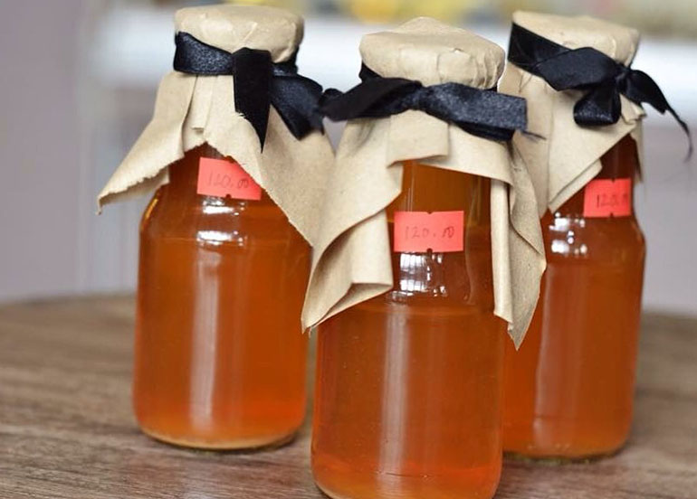
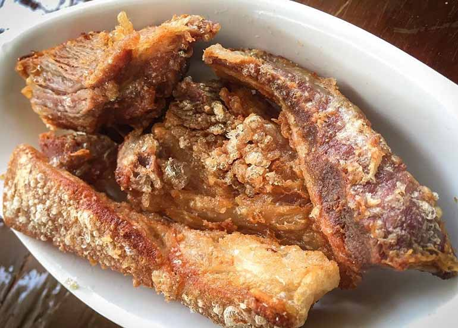
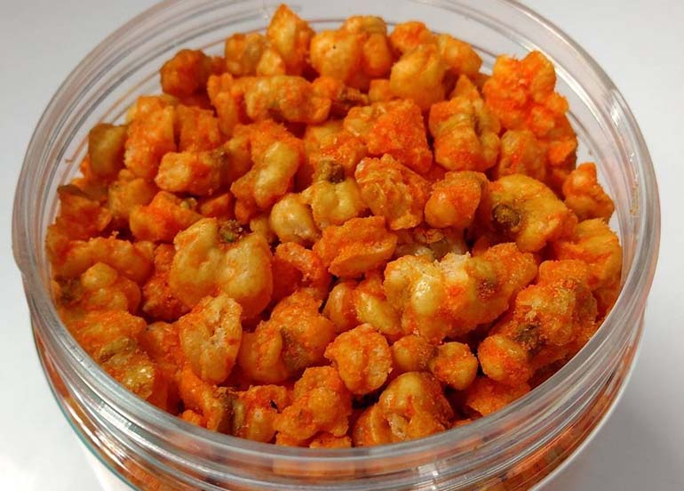
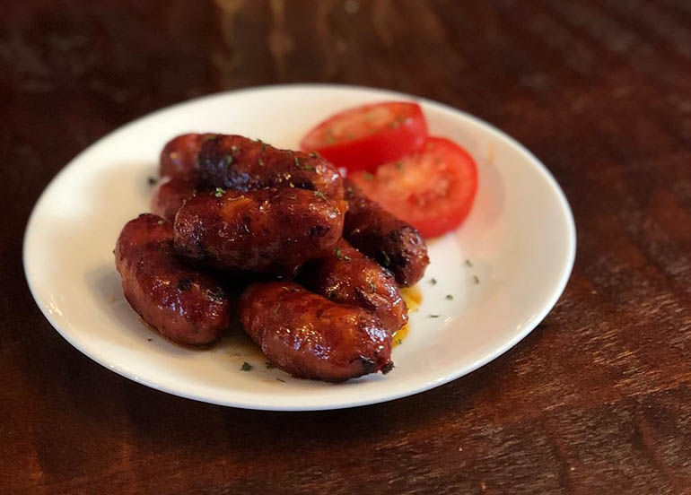
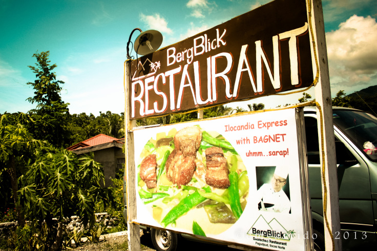
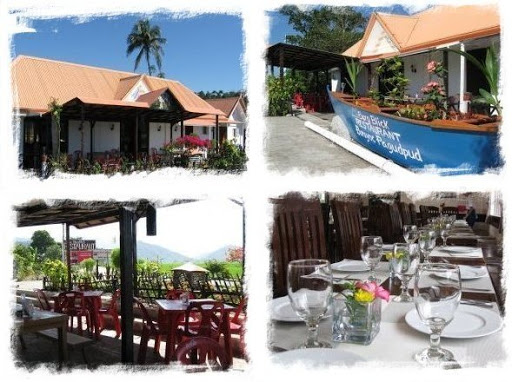
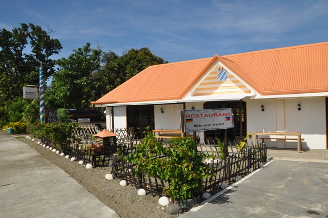

Ilocos Norte Itinerary:
Ultimate Travel Guide
All that walking, sandboarding, sightseeing, and picture-taking around Laoag will surely make you hungry. Fortunately, there are a lot of great food choices to choose from to whet your appetite
From traditional Ilocano dishes to fusion cuisine, Laoag City has got your tummy covered.


RECOMMENDED FOODS
There are a lot restaurants in Ilocos Norte, that shouldn’t stop you from having filling meals especially with unique dishes in the province. Here are some must-try dishes that are staples in Ilocos Norte restaurants or homestay kitchens.
- VIGAN EMPANADA
- BAGNET
- CHICHACORN / CORNIC
- VIGAN LONGGANISA
- SUKANG ILOKOS
-
Made with sugarcane, if there’s one reason for you to bring home sukang Iloko, it’s that it goes great with the other savory pasalubong that you’ll bring home like the empanada, the bagnet, and the Vigan Longganisa.

- ROYAL BIBINGKA
Usually filled with toge (mung bean sprouts), thinly sliced carrots, grated green papaya, a whole egg, and a generous amout of Vigan longganisa, the Vigan Empanada is a crunchy, savory delicacy that’s best eaten with suka.
Sinful as much as it is delicious, the bagnet which is also considered by some as the Ilocano’s version of a crispy pata/lechon kawali/chicharon is a pasalubong that your meat loving friends/family will surely enjoy most especially with an ice cold beer

If you’re wondering what to give your officemates then we suggest a bag of chichacorn! Not only is this pasalubong great finger food to munch on during breaks but it also comes in several flavors: Cheese, Garlic, and Sweet and Spicy.

If you’re a breakfast lover, then you’ll surely want to bring some Vigan Longganisa home. It’s garlicky taste goes great with fried rice, a sunny side up egg, fresh tomatoes, and vinegar. Talk about a good breakfast!

That’s perfect then! The Royal Bibingka that’s distinct because of it’s tikoy-like texture is rich and just sweet enough to balance out all of the savory pasalubong.
RESTAURANTS
- BERGBLICK RESTAURANT
It is the only place for fine dining in Pagudpud. Since 2010.

they have been offering a mixture of Authentic German, International and Filipino cuisine prepared to the highest standards.

Freshness is our priority. Most of our vegetables and salads are organic grown and always prepared to perfection.
